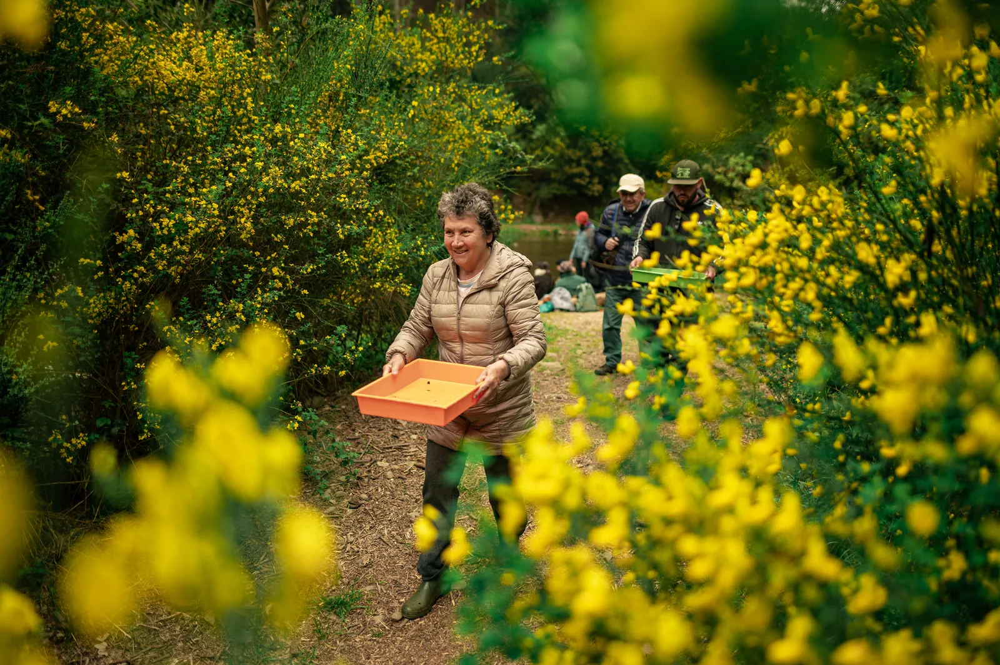
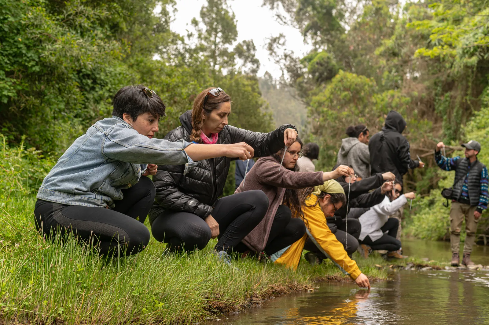
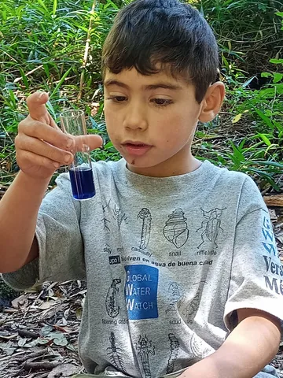
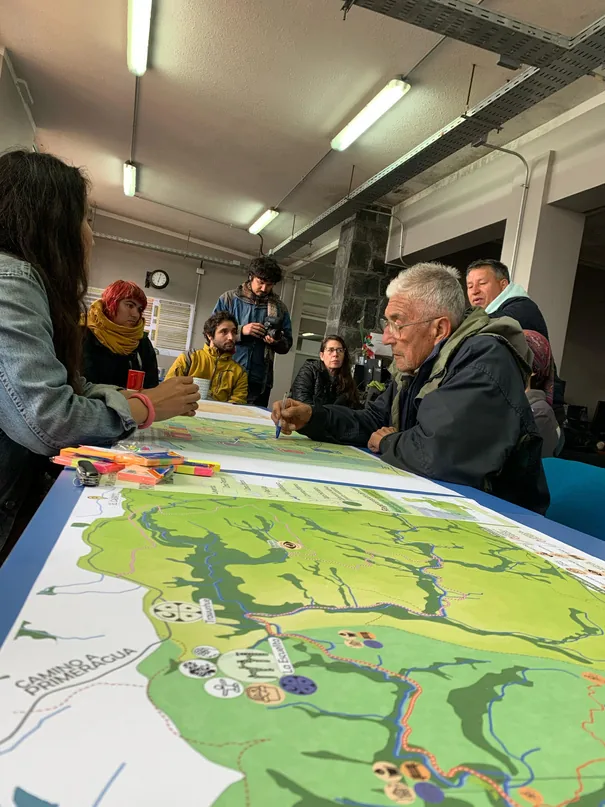

01
Datos confiables
Aplicar técnicas compartidas para observar cambios en los cuerpos de agua.
GLOBAL WATER WATCH CHILE
Monitoreo comunitario participativo de aguas para el cuidado coparticipativo de cuencas.
Explorar el mapaObservación del agua
IDENTIDAD Y TRAYECTORIA
Una alianza para conocer y cuidar el agua desde los propios territorios.

CUIDADO COPARTICIPATIVO
Global Water Watch Chile surge de la colaboración entre Fundación Manzana Verde y Global Water Watch Internacional para implementar monitoreo comunitario participativo, educación ambiental y acompañamiento a comunidades e instituciones.
El programa fortalece capacidades locales para observar, interpretar y utilizar información del agua en decisiones sobre sus propios territorios.
Conocer la redTRAYECTORIA · CIFRAS HISTÓRICAS DE 2024
Cifras referidas a 2024. No representan un contador actualizado en tiempo real.
TRABAJO COLABORATIVO
Una colaboración entre organizaciones que cuidan cuerpos de agua en distintos territorios de Chile.
Organizaciones territoriales
Los logos de las agrupaciones se incorporarán cuando autoricen expresamente su publicación.
Logos de organizaciones publicados únicamente con su autorización; las relaciones internas de la red no se exponen en el mapa.
CIENCIA Y TRABAJO EN TERRENO
Acompañamos el monitoreo comunitario, la interpretación de datos y el aprendizaje colectivo.

Aplicar técnicas compartidas para observar cambios en los cuerpos de agua.

Interpretar los antecedentes para orientar acciones de cuidado de cuencas.

Aprender sobre el ciclo del agua mediante experiencias formativas compartidas.

EL TRABAJO EN IMÁGENES
Registros de terreno, formación y encuentros que acercan la ciencia a las comunidades.
Antes de la publicación definitiva, confirmar títulos, años, créditos y permisos de inserción de cada video.
CARTOGRAFÍA COLABORATIVA
Explora información autorizada de cuerpos de agua y sus territorios.
ORGANIZACIONES TERRITORIALES
¿Su organización busca cuidar un río, lago, laguna o humedal? Escríbannos para conocer las metodologías de monitoreo y conversar sobre posibles formas de colaboración territorial.
Contactar a GWW Chile